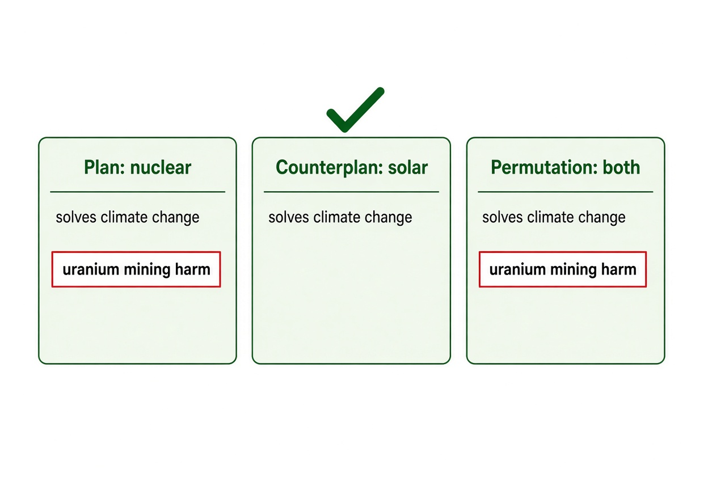

Chapter 19: Counterplans and Permutations
In this chapter
- Objectives
- Key terms
- The idea
- 19.1 When the status quo is hard to defend
- 19.2 Opportunity cost and the net benefit
- 19.3 The permutation
- 19.4 The rules for permutations
- 19.5 Permutations at the pet shop
- 19.6 How a counterplan beats the permutation
- Say it
- Worked examples
- A personal decision
- A national policy question
- How a judge weighs it
- Common mistakes
- Practice
- Check questions
Move: Build, Answer. Builds on: Chapters 14 and 17. Where you use it: negative policy debates where the affirmative's harm is real and hard to deny, and affirmative debates where the negative proposes an alternative.
Objectives
By the end of this chapter you should be able to:
- Explain why a negative would propose a counterplan, using the idea of opportunity cost.
- Identify a counterplan's net benefit and its solvency deficits.
- Answer a counterplan with a permutation, and explain why a permutation is a test, not a new plan.
- Explain the two rules that keep permutations fair.
- Explain how a counterplan beats the permutation.
- List every legitimate permutation of a plan and a counterplan, and spot the ones that sever or are intrinsic.
Key terms
Counterplan, opportunity cost, net benefit, solvency deficit, permutation, severance, intrinsicness, mutual exclusivity, competition, plan-inclusive counterplan, functional competition, textual competition.
The idea
19.1 When the status quo is hard to defend
Chapter 17 showed the negative defending the status quo with disadvantages and case answers. Sometimes that is a losing position. On some topics, the affirmative's harm is real, well documented and getting worse: the status quo is simply bad. A negative who argues that the harm does not exist will lose credibility, and a negative who argues the plan causes a small disadvantage will lose the weighing. Debaters call this kind of topic affirmative-sided.
The negative's answer is to stop defending the status quo and propose something better. A counterplan is a formal alternative proposal from the negative, different from the affirmative's plan, that solves the affirmative's harm in another way. Take an energy example. If the affirmative's plan is to invest in nuclear power to fight climate change, the negative might counterplan to invest in solar power instead. Now both sides agree climate change is bad and both claim to solve it. The affirmative's biggest impact no longer favors either side; it cancels on the Scale, just as Chapter 14 showed shared impacts do.
An indefensible status quo is the most common reason to read a counterplan, but negatives read them for three reasons. The first is the one above: a negative stuck defending a bad status quo will lose to the affirmative's harms. The second is to take the affirmative's offense. Picture the Scale with the affirmative's impacts stacked on its side. A counterplan that solves the same harm lets the negative put the same weight on its own side, so the affirmative's biggest impact no longer tips the Scale. The third is to make a small net benefit large. Once the counterplan has cancelled the affirmative's advantages, the negative needs only a little offense to win.
That third reason is the logic of a plan-inclusive counterplan, which does almost all of the plan but leaves out one piece. If the plan gives a grant to all 50 states, a counterplan that gives it to 48 states solves nearly everything the plan solves, and the debate turns on whether those two states should be left out. A modest reason to exclude them can be enough to win, which is also why many judges and coaches consider plan-inclusive counterplans unfair to the affirmative.
19.2 Opportunity cost and the net benefit
A counterplan works on the idea of opportunity cost: choosing one option means giving up another. If the country builds nuclear plants, it does not spend that money and time on solar. The counterplan's claim is that the plan's opportunity cost is too high, because the counterplan is the better use of the same effort.
To win, the counterplan needs a net benefit: a reason the world of the counterplan is better than the world of the plan. A net benefit can be a disadvantage to the plan that the counterplan avoids (nuclear power requires uranium mining, which harms the environment and health), or an extra advantage only the counterplan has (solar can be deployed much faster than nuclear plants can be built, and speed matters for climate change). Without a net benefit, the counterplan and the plan are just two ways to solve the same problem, and the judge has no reason to prefer the counterplan.
The affirmative's first answer is usually a solvency deficit: something the plan solves that the counterplan does not. If nuclear power provides steady electricity when the sun is not shining, and solar alone cannot, the counterplan solves less of the climate problem than the plan. The debate then becomes a comparison: does the counterplan's net benefit outweigh its solvency deficit?
19.3 The permutation
The affirmative has a second, often stronger answer. Is there any reason the country cannot invest in nuclear and solar? A permutation is the affirmative's argument that it is possible to do both the plan and all or part of the counterplan, and that doing both is better than doing the counterplan alone. In effect, it is a no-link argument: it says the counterplan is not a true opportunity cost to the plan, because choosing the plan does not mean giving up the counterplan.
A permutation is a test, not a new plan. It asks whether the counterplan really competes with the plan. If the best world is "both," then the counterplan is not a reason to reject the plan; it is just a good idea to add to it.
Because it is a test, a permutation works like a no-link argument against a disadvantage, or a "we meet" argument against topicality (Chapter 15). The affirmative is not changing its plan to "do both"; it is still defending the plan. It is showing that the negative's alternative is not a cost of choosing the plan.
Permutations are worth reading for two reasons. First, they take back what the counterplan took. If the counterplan was supposed to cancel the affirmative's advantages, a permutation that includes the counterplan lets the affirmative claim those advantages again, along with anything extra the counterplan solves. If the negative's net benefit does not link to the permutation, the counterplan stops being a reason to vote negative. Second, permutations are cheap and low-risk. A good one takes about fifteen seconds, an affirmative almost never loses a debate because it read one, and a negative that fails to answer one has usually lost the counterplan.

19.4 The rules for permutations
Permutations would be too easy if the affirmative could change its plan however it liked, so two rules keep them fair.
The first rule is against severance: a legitimate permutation includes all of the affirmative's plan. The affirmative cannot drop the parts of its plan that link to the negative's disadvantage. Doing so would let it abandon ground it chose in its first speech, after the negative has already built arguments against that ground.
The second rule is against intrinsicness: a legitimate permutation cannot add anything that is in neither the plan nor the counterplan. If the negative's net benefit is that nuclear power requires new uranium mining, the affirmative cannot permute "nuclear and solar, using only uranium that has already been mined." That adds a new idea to escape an argument the negative has already made.
Put simply, a fair permutation is all of the plan plus some or all of the counterplan, and nothing else.
19.5 Permutations at the pet shop
The rules are easier to see with a small example. You are at the pet shop, and your plan is to buy three pets: an alligator, a bird and a cat. Call the plan A, B, C. Before you reach the register, a friend proposes a counterplan: buy a dog and an eagle instead. Call the counterplan D, E.
A legitimate permutation must keep all of A, B and C, and it can add only D, E or both. That leaves exactly three legitimate permutations:
| Permutation | What it leaves out | What the debate is now about |
|---|---|---|
| Alligator, bird, cat and dog | The eagle | Whether the eagle is bad, or is what makes the counterplan better |
| Alligator, bird, cat and eagle | The dog | Whether the dog is bad, or is what makes the counterplan better |
| Alligator, bird, cat, dog and eagle | Nothing | Whether the plan itself makes things worse than the counterplan alone |
Each legitimate permutation is a choice. The affirmative leaves out whichever part of the counterplan it thinks it can beat, and the debate narrows to that part. The third permutation takes all of the counterplan, so the negative can win only with a net benefit to the plan itself: some reason that buying the alligator, bird and cat is worse than buying only the dog and eagle.
Anything else breaks a rule. "Alligator, bird and dog" severs: it drops the cat, which the negative may already have attacked (cats wreck the furniture). "Alligator, bird, cat and fish" is intrinsic: the fish is in neither the plan nor the counterplan, so the affirmative has invented new ground in the middle of the debate. An affirmative that can add a fish can add whatever it needs to escape any net benefit, which is why intrinsic permutations are unfair.
19.6 How a counterplan beats the permutation
A counterplan survives the permutation in one of two ways.
The first is mutual exclusivity: it is impossible to do both. The clearest case is a counterplan that does most of the plan but leaves out one part. If the plan does A, B and C, and the counterplan does only A and B, the permutation cannot work: doing A, B and C is not the same as doing only A and B, and the severance rule means the affirmative cannot drop C. The debate then comes down to whether C is good or bad.
The second is competition: doing both is worse than doing the counterplan alone. This is where the net benefit matters most. If the negative's net benefit is a disadvantage to the plan itself, such as harm from uranium mining, then any world that includes the plan, including the permutation, still causes that harm. The counterplan alone avoids it. That is why a counterplan's net benefit should link to the plan, not just describe why the counterplan is nice. A net benefit that says "solar is fast" does not beat the permutation, because the permutation includes solar. A net benefit that says "nuclear causes harm" does, because the permutation includes nuclear.
Both of these are forms of functional competition: the plan and counterplan compete because of what they would do. Some negatives try textual competition instead, arguing that a counterplan competes because its wording differs from the plan's. A counterplan identical to the plan except that it calls Taiwan "the Republic of China" does exactly what the plan does, but the negative claims a net benefit from the word choice. Most judges and coaches reject textual competition. It is easy to find an author who criticizes almost any word and nearly impossible to find one who says a debate must use one particular word, so the negative can win without disagreeing about anything the plan does.
At a glance
| Term | What it means | Energy example |
|---|---|---|
| Counterplan | The negative's alternative that solves the harm another way | Invest in solar instead of nuclear |
| Net benefit | Why the counterplan's world is better than the plan's | Nuclear requires harmful uranium mining |
| Solvency deficit | What the plan solves that the counterplan does not | Solar alone cannot supply steady power at night |
| Permutation | Do the plan and the counterplan | Invest in nuclear and solar |
| Competition | Doing both is worse than the counterplan alone | Any world with nuclear still mines uranium |
Say it
- Counterplan: "Counterplan: [text]. It solves their harm, and it has a net benefit..."
- Solvency deficit: "The counterplan doesn't solve [part of the harm], and that outweighs their net benefit."
- Permutation: "Permutation: do both. There's no reason to choose."
- Severance: "That permutation drops part of their plan. They can't sever."
- Competition: "The permutation still includes the plan, so it still causes the net benefit."
- Permutation with a text: "Permutation: do the plan and the dog. That leaves out the eagle, and the eagle is bad because..."
- Textual competition: "The counterplan does exactly what the plan does. Arguing over a word isn't a reason to reject the plan."
Worked examples
A personal decision
Resolution: Sam should get a dog.
The affirmative's advantage: a dog's barking deters burglars from the neighborhood's recent break-ins. The negative concedes burglaries are a real problem and counterplans: install a home security system. Its net benefit is that a dog costs money and time every day for years, while a security system is a one-time cost. The affirmative permutes: get a dog and install the system. The negative answers that the net benefit links to the plan, so the permutation still includes the dog's daily cost. The affirmative answers with a solvency deficit: a camera records a burglary, but a barking dog prevents it, because burglars avoid homes with dogs. The judge weighs prevention against cost.
A national policy question
Resolution: The United States federal government should substantially restrict the development of artificial intelligence.
Against the licensing plan, the negative counterplans: the federal government should require safety testing of the largest AI systems before deployment, without a license to train them. The net benefit is the AI leadership disadvantage from Chapter 17: restricting training slows American development, while testing before deployment does not. The affirmative permutes: do both. The negative argues competition: any world with the licensing requirement still slows development, so the permutation still links to the disadvantage. The affirmative answers with a solvency deficit: testing after training is too late for the most dangerous systems, whose risks arise during development. The debate turns on which is larger: the deficit or the net benefit.
How a judge weighs it
A judge evaluates a counterplan in order. First, does it compete: does the permutation fail, either because the two cannot coexist or because doing both is worse? If the permutation wins, the counterplan is no reason to reject the plan. Second, if it competes, does the net benefit outweigh the solvency deficit? A counterplan with a strong net benefit and a small deficit usually wins; one with no net benefit never does.
Common mistakes
- A counterplan with no net benefit. Without one, there is no reason to prefer it over the plan.
- A net benefit that does not link to the plan. "The counterplan is good" loses to the permutation. "The plan is bad" does not.
- Severing in the permutation. The permutation must include the whole plan.
- Adding new ideas in the permutation. Nothing beyond the plan and the counterplan.
- Forgetting the solvency deficit. The affirmative's best answer is often something the counterplan cannot do.
Practice
Drill: counter it (15 minutes, pairs). One partner states a policy plan. The other proposes a counterplan and a net benefit that links to the plan. The first partner answers with a permutation and a solvency deficit. Switch.
Drill: pet shop permutations (10 minutes, pairs). One partner names a plan of three things (pets, pizza toppings, classes to take). The other names a counterplan of two different things. Together, list every legitimate permutation. Then write one permutation that severs and one that is intrinsic, and explain what each did wrong. Finally, pick the permutation the affirmative should read and say what the debate would now be about.
Writing exercise. Write a counterplan to the AI licensing plan, with a net benefit. Then write the affirmative's permutation and explain, in 150 words, whether the counterplan competes and why.
Check questions
Choose an answer to see feedback. Nothing is recorded.
1. Why would a negative read a counterplan?
2. What is a net benefit?
3. The affirmative says: "Do both the plan and the counterplan." What is this?
4. Which permutation breaks the rule against severance?
5. Which net benefit beats the permutation?
6. The plan buys an alligator, a bird and a cat. The counterplan buys a dog and an eagle. Which is a legitimate permutation?